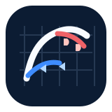

01most expressive
Jetstream
A single white boundary bends into an implied F before carrying on. It feels like a forecast drawn on a map, not a letter wearing weather symbols.
- Base
- Night navy
- Cold
- Radar blue
- Warm
- Coral red
Frontline Forecast · Concept Lab
A single white boundary bends into an implied F before carrying on. It feels like a forecast drawn on a map, not a letter wearing weather symbols.
Two weather fronts share one spine. Together their curves hint at an F in negative space, while the opening is strong enough to use as an app icon.
A horizon, radar sweep, and leading weather line make a compact field note. The monogram is only a sensation created by the front’s turn.

Cold and warm fronts converge across a measured grid. It gives the system an analytical stance while retaining a human, moving line.
Decision lens